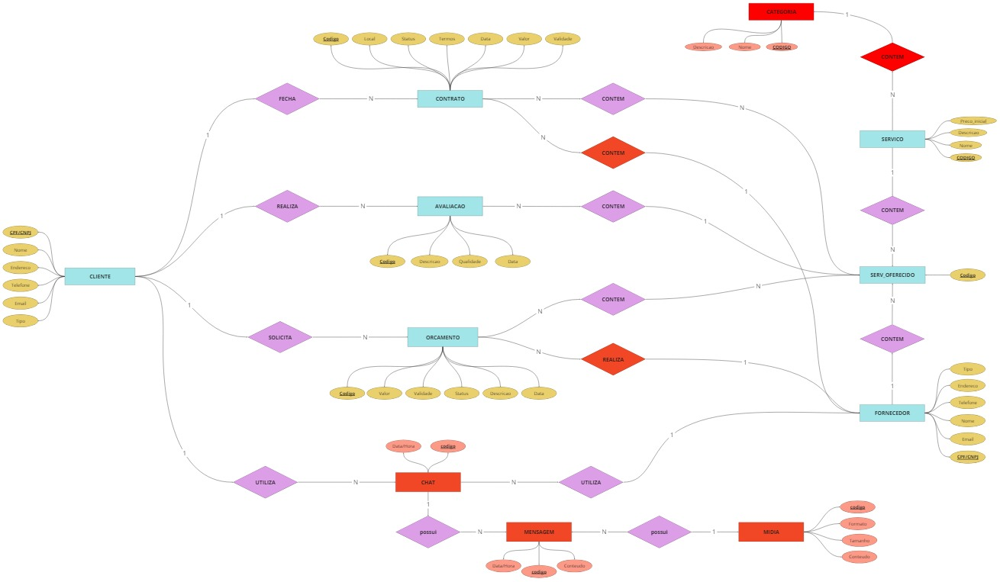

Estruturação do Banco de dados para o site Ilusion Services
Ao observar-se a dificuldade atual das pessoas em encontrarem bons serviços gerais de maneira rápida e fácil e com segurança, idealizou-se a ideia de implementar um site que possa fazer a ponte entre as pessoas que necessitam de um serviço específico e as empresas ou pessoas que o realizam. Com este propósito, iniciou-se o desenvolvimento do banco de dados da plataforma, onde suas características e peculiaridades podem ser observadas a seguir.
Os clientes poderão contratar um ou mais serviços de um mesmo fornecedor e solicitar um orçamento para um ou mais serviços específicos. Cada orçamento contém os detalhes do que foi solicitado pelos clientes, assim como registra o cliente que solicitou e o serviço que contém. Tanto pessoas físicas quanto empresas podem ser clientes e solicitar ou oferecer serviços. Para cada orçamento ou contrato, um chat entre o cliente e o fornecedor é estabelecido, que armazena as comunicações entre eles por meio de registro, incluindo mensagens, datas e detalhes dos participantes.
Quando um serviço é contratado, o sistema registra automaticamente a data do contrato, o local onde será realizado e o status do serviço, que pode ser pendente, em andamento ou finalizado. Da mesma forma, ao realizar uma avaliação de um serviço, o sistema registra quem fez a avaliação, a qual serviço se refere, a data da avaliação e a qualidade do serviço. Além disso, é possível incluir uma descrição opcional na avaliação.
Modelo Relacional Conceitual
Para iniciar o projeto de criação fez-se necessário a criação de um modelo conceitual relacional, que consiste em um esquema de fluxograma, ou seja, formas geométricas para representar as entidades e relacionamentos contemplados pelo banco de dados. Modelo relacional conceituial pode ser observado a seguir.

Entidades identificadas e implementadas
- Avaliação;
- Categoria;
- Chat;
- Cliente;
- Contrato;
- Fornecedor;
- Mensagem;
- Mídia
- Orçamento;
- Serviço;
- Serviço oferecido;
Relacionamentos identificadas e implementadas
- Um cliente pode solicitar vários orçamentos e um orçamento pode ser solicitado apenas por um cliente;
- Um cliente pode fechar vários contratos e um contrato pode ser fechado por apenas um cliente;
- Um cliente realiza várias avaliações e uma avaliação pode ser realizada por apenas um cliente;
- Um cliente utiliza vários chats e um chat por ser utilizado apenas por um cliente;
- Um orçamento pode conter vários serviços oferecidos e um serviço oferecido pode estar contido em vários orçamentos;
- Um contrato pode conter vários serviços oferecidos e um serviço oferecido pode estar contido em vários contratos;
- Um fornecedor pode utilizar vários chats, mas um chat pode ser utilizado apenas por um fornecedor;
- Um serviço oferecido pode conter apenas um serviço e um serviço pode estar contido em vários serviços oferecidos;
- Um serviço oferecido pode conter apenas um fornecedor e um fornecedor pode estar contido em vários serviços oferecidos;
- Uma categoria pode estar em vários serviços, e um serviço pode conter apenas uma categoria;
- Uma mídia pode estar contida em várias mensagens e uma mensagem pode conter apenas uma mídia;
- Uma mensagem pode estar contida em apenas um chat e um chat pode conter várias mensagens;
- Um orçamento contém um fornecedor e um fornecedor pode estar contido em vários orçamentos;
Modelo físico (SQL)
Por fim, tornou-se necessário a implementação do modelo conceitual em um modelo físico utilizando a linguagem de Query SQL, onde utilizou-se da IDE MySql para a fazer respectiva implementação. Em seguidas pode ser observados os scripts para estuturação da tabela e a sua respectiva tabela com exemplos de INSERTS e consulta de dados com SELECT.